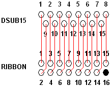

J1 - PCB - Data Acquisition (DAQC)
- Wash buffer and waste fluids weight sensor signals from the Lower Cabinet Interface PCB run through J1.
- CABLE, RIBBON, DSUB15 connects J1 to J18 at the top of the upper left card vage.
- CABLE, INTERFACE, LOWER CABINET, DSUB connects J18 to J3 on the Lower Cabinet Interface PCB.
- Lower Cabinet Interface PCB is located on the bulkhead near the compressors.
| J1 | Description | Signal / Voltage | To / From / Notes |
|---|---|---|---|
|
1 |
+12V_IO |
+12V |
To Lower Cabinet Interface PCB J3-1. +12 V power from CPU backplane J3-B9 through fuse F1. |
|
2 |
-12VFILT |
-12V |
To Lower Cabinet Interface PCB J3-9. -12V power from CPU backplane J3-B7. |
|
3 |
N/C |
0V |
To Lower Cabinet Interface PCB J3-2. Not connected. |
|
4 |
AGND |
0V |
To Lower Cabinet Interface PCB J3-10. Analog ground. |
|
5 |
STATIC2 |
0 to 6V (6V @ 35 psi) |
To Lower Cabinet Interface PCB J3-3. Compressor air pressure sensor output. TestAnalog CH58. |
|
6 |
AGND |
0V |
To Lower Cabinet Interface PCB J3-11. Analog ground. |
|
7 |
STATIC1 |
1.8 to 3V |
From Lower Cabinet Interface PCB J3-4. Wash buffer supply (box) weight sensor output. Software selects which channel (front or rear) to read. Configuration enabled: JP1A installed (labled NORMAL) and JP1C not installed (labled BYPASS). Wash buffer load 1 from wash buffer box weight sensor. Empty = 1.8 V. The voltage is displayed in the sensor calibration dialog. |
|
8 |
AGND |
0V |
To Lower Cabinet Interface PCB J3-12. Analog ground. |
|
9 |
STATIC7 |
1.6V to 3V |
From Lower Cabinet Interface PCB J3-5. Wash buffer occlusion (pressure sensor) or flow (bubble detector) output. Software selects which channel to read. Configuration enabled: JP1B installed (labled NORMAL) and JP1D not installed (labled BYPASS). Wash buffer load 2 (weight sensor output when Lower Cabinet I/F PCB JP1D BYPASS jumper is installed). Ready state = 1.6 V. |
|
10 |
AGND |
0V |
To Lower Cabinet Interface PCB J3-13. Analog ground. |
|
11 |
STATIC6 |
1.8 to 3V |
From Lower Cabinet Interface PCB J3-6. Waste load 1 from waste fluid bottle weight sensor. Empty = 1.8 V. The voltage is displayed in the sensor calibration dialog. |
|
12 |
AGND |
0V |
To Lower Cabinet Interface PCB J3-14. Ground for waste bottle 1 weight sensor signal. |
|
13 |
STATIC5 |
1.8 to 3V |
From Lower Cabinet Interface PCB J3-7. Waste load 2 from waste fluid bottle weight sensor. Empty = 1.8 V. The voltage is displayed in the sensor calibration dialog. |
|
14 |
AGND |
0V |
To Lower Cabinet Interface PCB J3-15. Ground for waste bottle 2 weight sensor signal. |
|
15 |
N/C |
0V |
To Lower Cabinet Interface PCB J3-8. Not connected. Connected to AGND on LC I/F PCB. |
|
16 |
AGND |
0V |
There is no pin 16 on the 15-pin lower cabinet interface PCB connector. Analog ground. |
- This drawing lists the connector pin numbers for a DSUB15 connector transition into a ribbon cable.
- The J1 (Ribbon Cable) connector on the DAQC PCB connects to J18 (DSUB15) on the way to JP3 on the Lower Cabinet Interface PCB.
